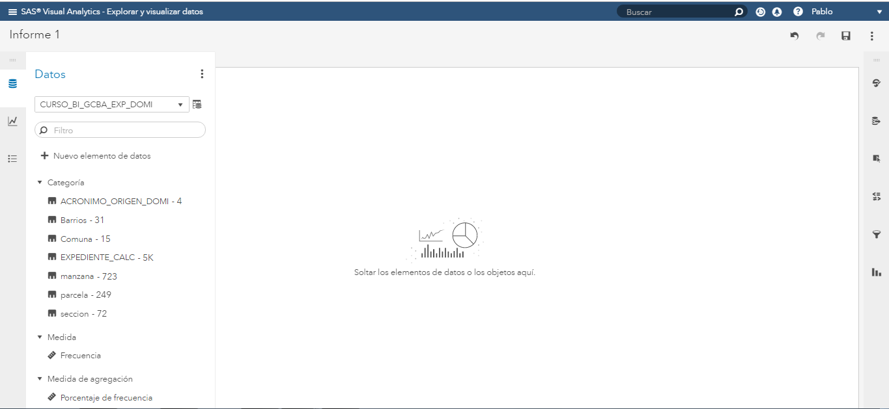
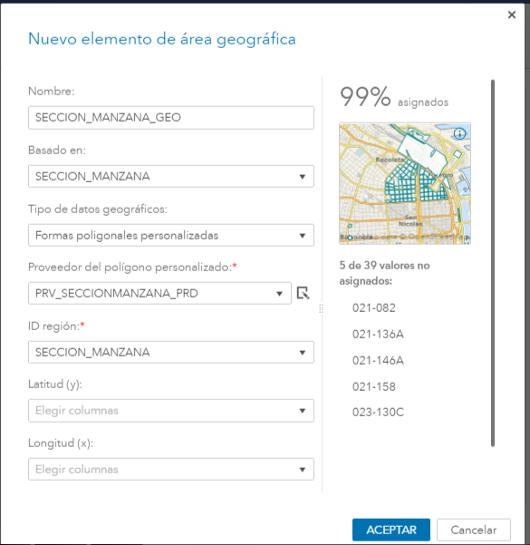
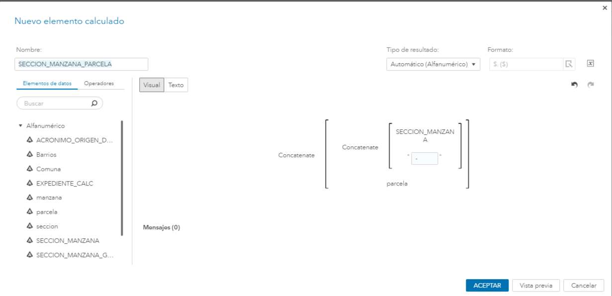
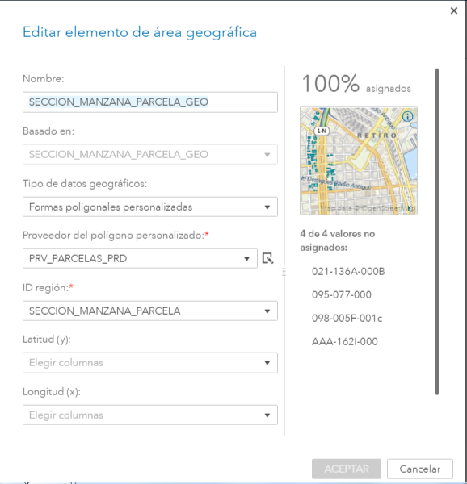
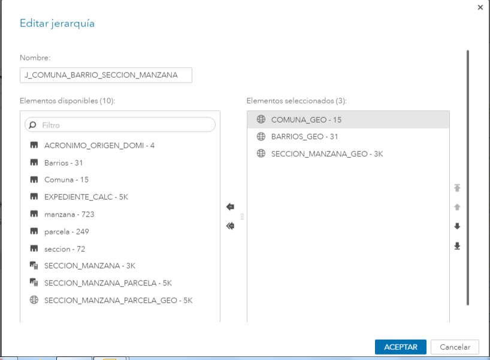
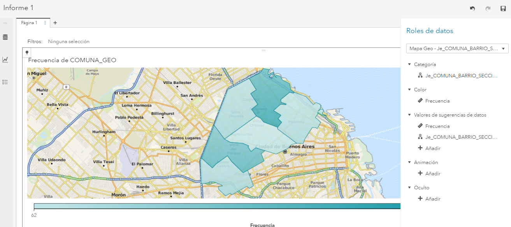
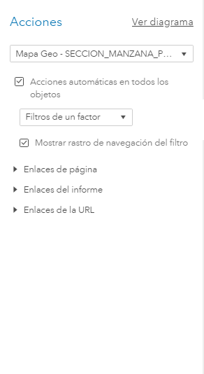
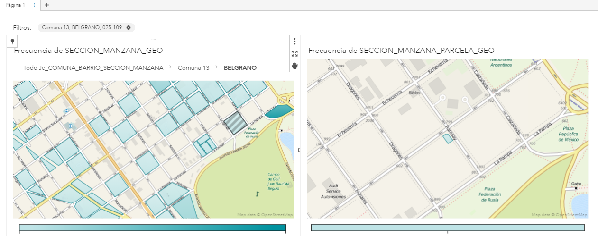

Capítulo 6 Mapas
El objetivo de este capítulo es explicar paso a paso como crear una visualización de datos sobre mapas geográficos. Para esto haremos uso de tablas que ya estan precargadas en SAS Viya, y que reunen la información de los polígonos.
Nuevo reporte, opción “Explorar y visualizar datos”
- Agregamos la tabla CAS al reporte:

Figure 1.3: Añadir fuente de datos
- Generamos el elemento calculado “SECCION_MANZANA”

Figure 1.4: Sección-Manzana
- Generamos el elemento calculado -elemento greográfico- “SECCION_MANZANA”

Figure 1.5: Seción-Manzana-GEO
- Generamos el elemento calculado “SECCION_MANZANA_PARCELA”

Figure 1.6: Sección-Manzana-Parcela
- Generamos el elemento calculado, -elemento greográfico- “SECCION_MANZANA_PARCELA_GEO”

Figure 1.7: Sección-Manzana-Parcela-GEO
- Generamos la jerarquía

Figure 1.8: Jerarquía GEO
Seleccionamos el grafico “Mapa Geo”
- Asociamos la jerarquía creada como rol de datos del mapas

Figure 1.9: Mapa 1 roles de datos
- Creamos otroa mapa y le asociamos el rol “ManzanaGEO”

Figure 1.10: Mapa 2 roles de datos
- Generamos la interacción automática entre todos los objetos

Figure 1.11: Acciones entre objetos
